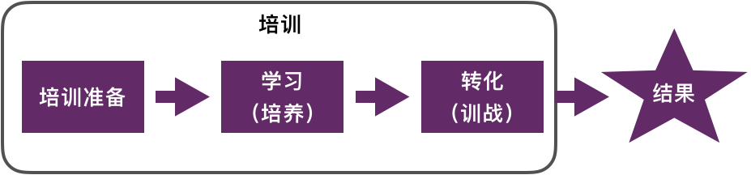
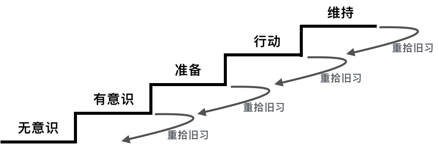

培训是企业提升员工能力最常见的方式，对于转型期的企业来说更是如此。管理层希望通过培训导入理念、普及知识，从而推动转型。然而一个残酷的事实是，大部分培训其实并没有什么用。我的同事仝校长在他的博客然而培训并没有什么用中表达了相同的观点。他认为培训只在两种情况下有用。一是学员已经充分准备好的情况下，遇到同样充分准备好的内容时。二是培训相当于在心里埋下一颗种子，在培训之后能够不断学习和实践，从而达到培训效果。然而这两种情况对老师和学员来说，似乎都可遇而不可求。
那么企业究竟需要什么样的培训？什么样的培训算是成功？作为一名咨询师和教练，如何做一次成功的培训呢？
我认为，企业培训的目标是提升员工绩效，只有达到这个目标才算是成功的培训。要实现这个目标就需要将培训视作一个持续的过程，而不只是短短数天的集中“培训”。教练要以终为始去设计课程和流程体验，帮助员工播下“我能改变”和“我想改变”的种子，同时指导企业“松土”和“施肥”，建立合适的环境与机制。通过培养+训战的方式，利用改进形建立闭环，最终实现将培训转化成员工绩效的目的。
培训的目标是提升员工绩效
当我在《将培训转化为商业结果》中读到“培训的目标是提升员工绩效”时，我深以为然。没有企业会支付大量金钱和员工的时间，仅仅为了培训而培训。通过培训提升员工能力，提升其绩效，企业通过员工绩效的提升而获益，这是企业做培训的根本原因。
这个道理很简单，但做起来难，很多时候都变成为了培训而培训。很多企业的人力资源部负责员工培训，每年制定培训计划，联系培训机构和讲师，安排培训，培训结束意味着任务结束。然而培训能起到多大效果，很少或者很难有跟踪和评估。
要想培训有效果，我们就要回到它的目标。如果培训的目标是提升员工绩效，如何才能达成这个目标？
培训是一个持续的过程
为了达成培训目标，就不能把培训看成是一个为期数天的学习活动，而是应该包括前期的准备、学习（培养）、后期知识转化（训战）的完整过程。每一个环节都非常重要，如果做不到位都会影响到最终结果。

在准备阶段，要明确目标。企业希望通过培训，解决什么问题？这是一个需要被解决的问题吗？培训是正确的解决方案吗？希望通过培训提升员工哪些方面的绩效。只有明确了“病症”，才有可能下对“处方”，否则吃再多“药”也没有用。
学习阶段，这个阶段做的事情就是传统的“培训”，把它定位成培育种子。这个阶段通常包括让学员学习他不知道的(Know unknown)、强化他已经知道的并初步建立知识体系，更重要的是帮助学员建立“我能改变”和“我想改变”的信念。只有建立了这样的信念，才有可能在后期将知识转化成绩效。
在后期知识转化阶段需要“训战”，包括训练和实战。光学不练是假把式，没有哪个运动员掌握了动作要领就能拿冠军，没有哪个人会读五线谱就能成为音乐家，也没有哪个程序员知道Java语法就能写出好程序。知识要转化成能力和绩效，就需要不断的练习和实战。
因此，培训是为了提升员工绩效，进而推动企业绩效。成功的培训包括前期准备、培养和训战，是一个持续过程。培训的知识不应该只停留在脑中，而是应该转化成绩效。
作为咨询师和教练，如何打造这样的培训？
以终为始设计培训过程
整个培训的过程应该以终为始。当企业提出培训需求时，你需要了解背景是什么？并且把关注点从如何培训转移到要解决的业务问题或者机遇是什么？在课程设计、培养和训战流程设计时，都应该围绕目标进行。
管理层对目标的认同和对自己角色的定位是确保培训效果的重要因素。很多时候管理层是不清楚目标的，教练要通过沟通和引导帮助管理层明确目标，确保他们清楚培训与员工绩效和业务目标的关系。同时管理层与培训并不是孤立的关系，他们也承担了一定的职责。例如，如何激励员工，如何创造环境让学员学以致用。
学员带着清晰的目标和实际问题参加培训效果更佳。清晰的目标会促进学员主动思考。对成年人来说，当培训与实际问题有明确的关联性时，能够极大增强学习动机。因此要让学员带着目标和问题来参加培训。培训前的高层领导讲话和动员是应对这种情况的一个非常好的实践。
培训课程应该与学员当前能力匹配。课程难度过高或过低都不利于培训效果，因此应该提前摸清学员状况。通过调查问卷、访谈等方式了解学员的背景和现状，在实际工作中有哪些困难和挑战。然后从现状出发，以目标为终点，识别出培训需求，从而完成课程设计和日程安排。
播下“我能改变”和“我想改变”的种子
在培养阶段，也就是集中学习的阶段，是教练们很熟悉和擅长的阶段。需要注意的是，在这个阶段最重要的不是学员学到更多东西，而是播下“我能改变”和“我想改变”的种子。培训不是重点，结果才是重点。只有今天播下了种子，明天才能发芽和成长。
课程设计的五个原则
以下五个原则有利于帮助学员做到“我能改变”和“我想改变”：
少即是多：课程内容不宜太多太满，因为这样会给学员产生过大的压力，一方面学员不容易聚焦，另一方面畏难情绪就会滋长，抑制了学习积极性和创造性思维。因此课程要聚焦、留白，让学员有时间消化和思考，与实际问题联系起来。
婴儿步：这个极限编程的原则同样适用于培训。通过小步前进，可以不断增强学员信心。这就要求课程的设计也要做任务分解，每个任务的职责尽量单一。
正反馈：情绪对学习有强大的直接影响，在交互过程中，尽量以正反馈为主。正向的反馈能够调动大家的积极性，对于营造轻松、积极的学习氛围非常有帮助。即使是学员间的互动，也尽量以正反馈为主。我曾经有一次组织学员分组PK，如果A组找到B组的问题，A组加分，并且B组扣分。事后分析，B组扣分这样的规则并不好，让现场的气氛发生微妙的变化。
同理心：整个培训是一个持续的过程，在这个过程中，教练要有同理心。站在学员的角度思考、体验和检查整个过程。提升用户体验，确保用户体验是完整的、一致的。这就要求课程应该是充分准备，哪里需要思考、练习、辩论、高潮，都是设计好的。
自主觉察：“觉察”这个词很有意思，我第一次理解它是在《高绩效教练》这本书中。与填鸭式教学不同，教练应该让学员自己觉察哪里对，哪里不对，为什么要这样做。当学员能够自己觉察时，才算是真正理解，才有可能自己去改进。例如测试驱动开发（TDD）是一个比较难的课程，往往学员争议比较多。我在培训时，不会讲太多理论，而是让学员自己觉察。我的做法是让学员自己先做题，然后我展示用TDD的方式做题。让学员自己讨论总结什么是TDD（What），与自己的开发方式有什么不同(How)，有什么好处（Why）以及如何练习（Plan）。采用这种方式，我很少遇到对TDD很抗拒的学员。
在培训中运用好这五个原则，基本上学员就已经初步知道培训内容将如何帮助他解决问题，树立了“我能改变”的信心。然而，从“我能”到“我想”还有一个鸿沟。训战计划就是用来帮助学员跨越这个鸿沟的。
训战计划
训战包括训练与实战。训战计划是指学员以小组为单位，通过训练来强化学习内容，并在工作中进行实战的计划。训战计划会在集中学习结束时，由学员自己制定。这是将知识转化成员工绩效的关键一环，甚至可以说，整个集中学习过程都是为了制定这个训战计划。
将知识转换成个人绩效的过程需要自我改变。心理学家詹姆斯·普鲁查斯卡（James Prochaska）和卡洛· 迪克勒蒙特（Carlo DiClemente）在20世纪80年代的共同研究成果表明，自我改变从来不是戏剧性的觉悟和突变，而是有一系列必经步骤的。具体来说，在彻底完成改变、建立新习惯之前，需要经历五个阶段：
- 无意识阶段（Precontemplation）：没有感到问题的存在，或拒绝承认问题的严重性
- 有意识阶段（Contemplation）：意识到改变的必要性
- 准备阶段（Preparation）：了解相关步骤，做事前准备
- 行动阶段（Action）：开始执行计划
- 维持阶段（Maintenance）：根据新情况进行调整，并继续执行计划
跳过任何一个阶段，整个过程都会失败。改变是很难的，在任何一个阶段，学员都可能回到其原始状态。经过了培养阶段的集中学习后，学员已经完成了前2个阶段。接下来的准备阶段是最容易被忽视，也最容易出问题的阶段。此时如果改变意愿不强，就不会有后面的行动。而如果完全没有准备就开始行动，将会快速产生挫败感，导致整个过程失败。

训战计划能够推学员一把，在已经有了改变意识的基础上，利用同侪压力和组织措施将改变意识变成一个行动计划。教练的职责是确保学员的计划符合SMART原则。
制定训战计划的过程一定要有领导的参与。一是学员将更加重视这个计划；二是领导能够指导计划与实际工作相结合；三是领导认可的计划更容易在后续执行阶段得到支持。
制定训战计划的过程，就是学员思考如何将所学应用到工作中的过程。这个过程通常比较耗时，也比较烧脑。有2个方法可以降低这个过程的难度。一是在学习过程中，不断引导学员总结知识点，教练要引导和补充这些知识点和工具箱，并将其可视化；二是使用模板来引导学员制定计划的内容。我的同事总结了一个非常好的模板：
针对 <知识点、实践、待验证的疑惑>
我计划在 <截止时间> 之前
完成 <具体的事情（比如项目优化、尝试新的实践、Session分享，输出Workshop等）>
验收标准是 <具体可操作的验收标准>
在组织层面“松土”和“施肥”
将培训转化成员工绩效离不开组织的支持。一方面需要“松土”，在组织层面提供相对宽松一些的环境为学员的改进提供支持。例如增加技术债偿还的时间、提供试点项目、鼓励变革与创新等。另一方面需要“施肥”，对做得好的个人和团队进行鼓励和嘉奖，并以点带面扩大战果。
需要提醒的是，要特别重视学员直接上级领导的认同和支持，因为他们是与学员直接接触的工作对象。某种程度来说，他们的支持比高层领导更加重要。直接上级领导一句“你们学的这个挺好，就是在咱们项目不适用”，就会让培训成果打水漂。
因此，作为教练要与相关干系人做好充分的沟通。除了确保前期的目标统一外，还要就培养方式、训战计划的制定和实施进行充分说明，明确各环节他们所起的作用。例如：
- 在培训启动时，领导讲话要说明培训的目标和训战计划，让学员有清楚的目标并带着任务来学习。
- 在制定训战计划时，领导要给予指导和点评。
- 在实施训战计划时，领导要提供相应的支持，包括松土和施肥等。
利用改进形建立闭环
培训是一个过程，从现状到目标并不是一蹴而就的。因此训战计划的实施也需要不断迭代。改进形可以帮助建立闭环，持续迭代。
改进形（Improvement Kata）源自丰田，在《丰田套路》中，作者描述了改进形的运作过程：
- 先思考愿景、 方向和目标；
- 第一手地掌握现状；
- 朝着既定的愿景方向，设定下 一个目标状态；
- 然后，我们就能够一步一步地努力往目标状态迈进， 中间遇到的障碍就是我们需要做的事情，我们也可以从中汲取教训
下图是改进形的示例模板。我的同事伍斌在他的博客[改进形：专治“没空做改进” - 简书]

改进形除了由教练与学员一起做外，也可以由学员之间1对1做。改进形的关键在于小目标的周期要短，最好是1周，目标不要过高，一定要可以执行。这也是俗话说的“不怕慢，就怕站”。
总结
业界一个公认的事实是培训的转化率非常低，坊间也有很多培训无用论，那么培训究竟应该怎么做？本文提出打造完美培训的观点，但显然培训是不可能完美的。然而如果它能够达到提升员工绩效的目标，我认为它就接近完美了，甚至是不是完美已经不重要了。
本文提出的方法是：以“提升员工绩效”为目标，将培训看成一个持续的过程（包含培养和训战），利用五个课程设计原则和一个训战计划帮助学员建立“我能改变“和”我想改变”的信心，然后在组织层面进行“松土“和”施肥”以构建适合改进的环境，最后通过“改进形”形成闭环指导学员持续改进。